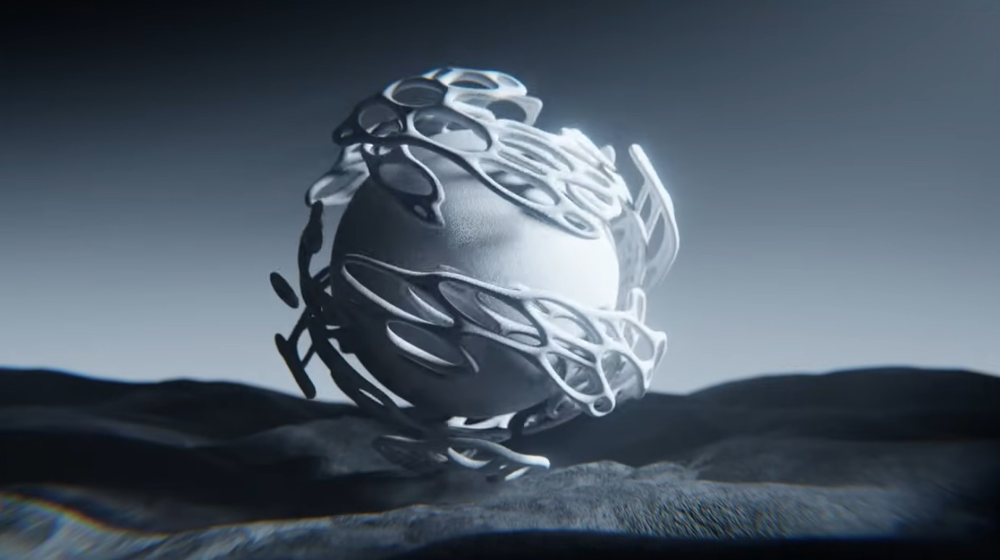
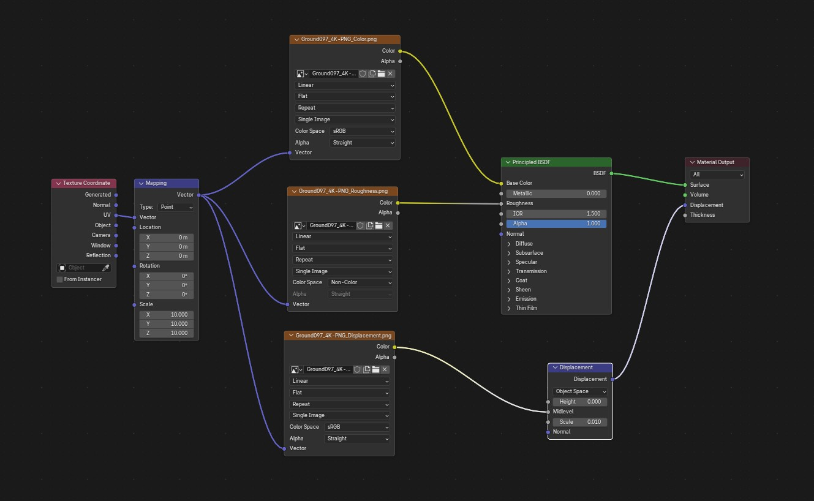
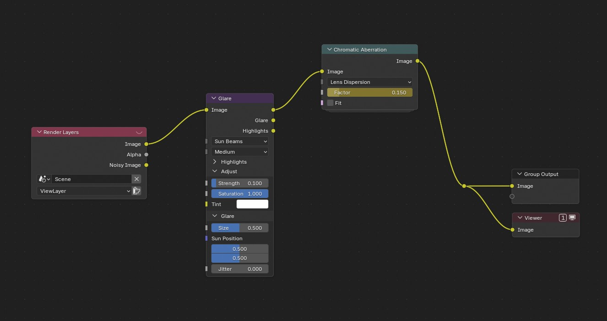

Back to Home
Technological Experiment
5/February/2026
What I Learned
Blender: Geometry Nodes
In this lab, I dipped my toes into the world of geometry nodes in Blender.
Blender: PBR Textures
I learned how to implement texture based ont Physically Based Rendering (PBR) within Blender
Blender: Compositing
Played around with compositing in Blender to try and add different visual effects to the final animation.
Project Screenshots

Reflection
I REAAALLLY enjoyed this week's lab exercise! Being able to have the choice to work on something with no restrictions was very freeing and gave me a chance to breathe and have fun while I'm bogged down with other assignments. Although, part of the difficulty with something this open was trying to focus in on a particular projec that I wanted to work on. I can be very indecisive when there are so many options for me. Some of hte other projects I wanted to attempt for this lab were:
- Learn how to use the Substance Painter / Designer workflow
- Learn Grease Pencil in Blender to make 2D/3D animations
- Learn sculpting in Blender - attempting to sculpt, retopologize, rig, and animate a simple character
- Creating Pixel Art in Aseprite
- making a simple 2D pixel game in Godot
For this project, I started by searching on Youtube for various Geometry Node tutorials. There are many available, but I landed on one by Ducky3D. I've know about his channel for awhile, and I felt like his video was explained very nicely, so I wanted to base my project off of one of his videos, in particular this one.
The tutorial showed how to use geometry nodes, in Blender's node-based system. I've used Blender's node editor for make procedural materials and shaders before, so I do have some previous experience using Blender's node-based system. However, learning about all of the possible Geometry Nodes that are available is very intimidating. After going through the tutorial, I feel like I have a basic understanding of what most of the nodes do, but I don't have enough experience to replicate an idea or to problem solve any issues that may arise while using Geometry Nodes. I hope that as I keep practicing with Geometry nodes, it will become more intuitive. Here is the final Geometry Node setup that I used for this project:
The next part of the assignment was animating the project using keyframes on properties of the Geometry Nodes. This was relatively straight forward because it is very similar to animating in Blender in general. I also tool this time to add lighting and also PBR textures to make things look interesting. I downloaded this desert sand texture from Ambient CG:

... and implemented it into the ground in my Blender scene:
I also added a procedural noise texture to the Geometry nodes object to make it more interesting. Here is the node setup for that:

I also took this opportunity to work in Blender's compositor, which I've never really used before. It gave me a chance to play around with adding different effects to the final render, which was interesting. I probably could have spent hours and hours fiddling with the different options available in the compositor, but I wanted to keep things relatively simple. One thing that I would like to focus on next time I work with the compositor is figuring out how to use render passes and optmize working with those. In any case, here is the compositor node setup that I used:
After all of this, I rendered out the final animation:
Again, I had so much fun doing this project, and I really hope that we get more freedom in the future to experiment more in this class!